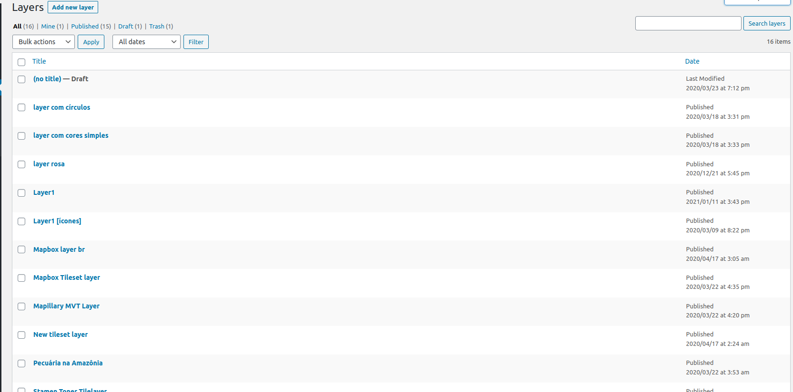
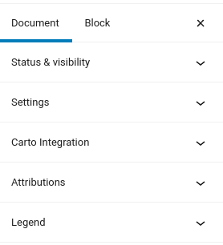
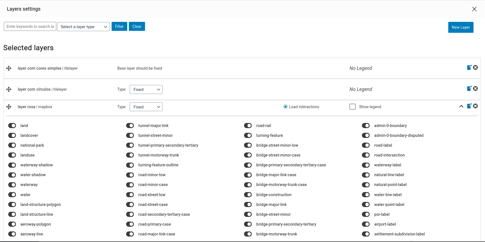
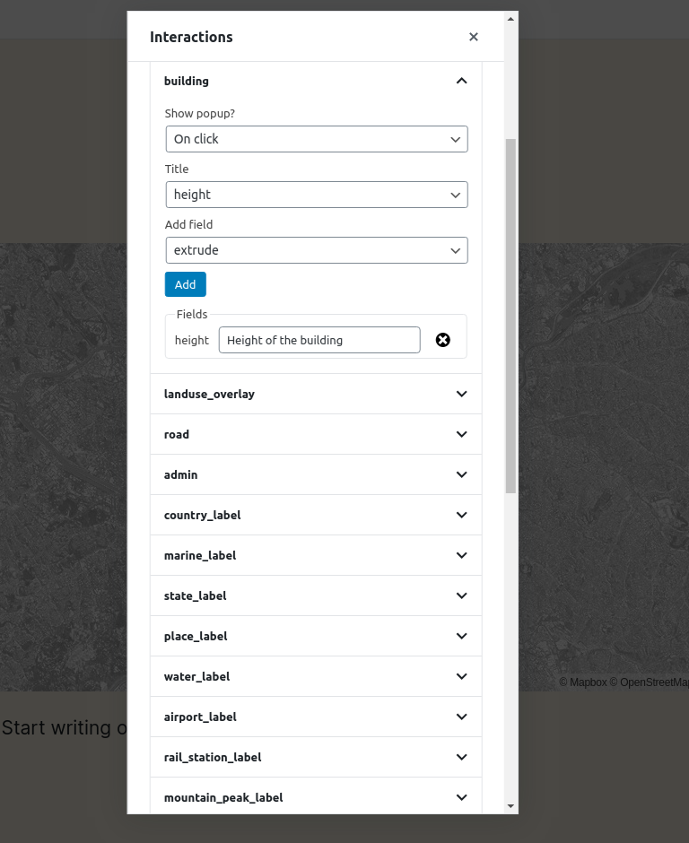
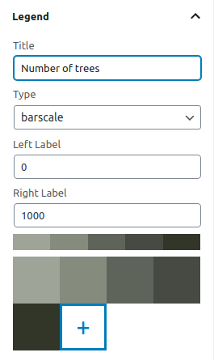

Creating a layer
One of the custom post types that JEO plugin provides is Layer. Layers are where you add legends, colors, and data sources to your maps. A map may contain one or more layers.

Entering the Layer post editor, you'll see a preview of the current layer (or a default layer if the current layer hasn't been edited yet) and three sidebar panels: Settings, Attributions and Legend.

Layer settings
On the Layer settings panel, you can change the layer type.
JEO supports four layer types out-of-the-box:
| Type | Required fields | Optional fields | Best for |
|---|---|---|---|
| Mapbox styles | Style ID (username/style-id) |
Access token | Complete styled maps created in Mapbox Studio |
| Mapbox tilesets | Tileset ID (username.tilesetid) |
Access token | Raster data hosted on Mapbox |
| Mapbox vector tiles (MVTs) | Tileset ID, source layer, geometry type | Access token | Vector data with interactive features |
| TileLayers | Tile URL template (https://.../{z}/{x}/{y}.png) |
— | Third-party tile servers (XYZ URLs) |
If the Access token field is left empty, the layer will use the Mapbox API key configured in Jeo → Settings. You only need to fill this field when the layer requires a different token than the global one.

There's also an Edit interactions button. Here, you can add popups to your layer when specific actions (clicking or hovering the mouse) are made (e.g.: clicking on a building and displaying its height).

Layer legend
On the Layer legend panel, you can add legends to your layer (barscale, simple-color, icons, or circles) and customize their colors.

Attributions
Here is where you can give layer credits, setting a link to download it or access more information about it. These attributions will be shown on the bottom of the map and inside the popup that shows up when the INFO button is clicked in a map.